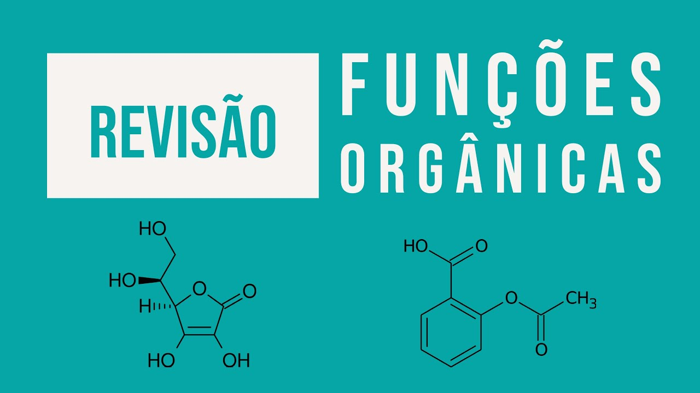

Atividades Natureza:
Primeiro Trimestre
Meme sobre Evolucionismo
Criamos um meme sobre evolucionismo, me inspirei na teoria de Charles Darwin e Lamarck para elaborar meu meme.
"Foi divertido o processo de criação do meme, pois após o meme ficar pronto pude compartilhar com os meus colegas e dar boas risadas com os memes deles."
Competências e habilidades: C2 H11
Link Da Atividade
Relatório Circuitos
O objetivo da atividade era criar circuitos de resistores em série e em paralelo,
medir a resistência de cada resistor, anotar os valores e responder às perguntas do relatório.
"Durante a aula prática, foi interessante fazer os circuitos em paralelo e em série. Eu nunca tinha visto um multímetro."
Competências e habilidades: C2 H6 C6 H34
Link Da Atividade
Apresentação Revisão de Orgânica

Fizemos uma apresentação em dupla sobre Carbono, Petróleo, Hidrocarbonetos, Representações, Classificação do Carbono e Ligação Sigma e Pi.
"Não gostei muito dessa atividade, achei meio cansativo ter que ficar pesquisando e resumindo cada um desses temas."
Competências e habilidades: C1 H3 H4 H5
Link Da Atividade
Autoria
Criamos um formulário sobre características genéticas (dominantes ou recessivas) e geramos um QR code.
Saímos espalhando pela escola para coletar dados dos alunos e criar um gráfico com as informações coletadas.
"Essa atividade foi boa, tínhamos liberdade de fazer o formulário como quiséssemos,
e eu fiquei responsável por criar o formulário para meus colegas divulgarem para as outras turmas."
Competências e habilidades: C2 H11
Segundo Trimestre
Relações Ecológicas
Revista Ecologica de João Vitor Dandolini Carvalho
Criamos um meme sobre evolucionismo, me inspirei na teoria de Charles Darwin e Lamarck para elaborar meu meme.
"Foi divertido o processo de criação do meme, pois após o meme ficar pronto pude compartilhar com os meus colegas e dar boas risadas com os memes deles."
Competências e habilidades: C3 H11 H18
Mapa mental Componentes Dos Circuitos Elétricos

Fizemos uma apresentação em dupla sobre Carbono, Petróleo, Hidrocarbonetos, Representações, Classificação do Carbono e Ligação Sigma e Pi.
"Não gostei muito dessa atividade, achei meio cansativo ter que ficar pesquisando e resumindo cada um desses temas."
Competências e habilidades: C1 H3 H4 H5
Link Da Atividade
Cartaz - Uso Do Plástico

Fizemos uma apresentação em dupla sobre Carbono, Petróleo, Hidrocarbonetos, Representações, Classificação do Carbono e Ligação Sigma e Pi.
"Não gostei muito dessa atividade, achei meio cansativo ter que ficar pesquisando e resumindo cada um desses temas."
Competências e habilidades: C3 H15 H18
Link Da Atividade
Autoria

Criamos um formulário sobre características genéticas (dominantes ou recessivas) e geramos um QR code.
Saímos espalhando pela escola para coletar dados dos alunos e criar um gráfico com as informações coletadas.
"Essa atividade foi boa, tínhamos liberdade de fazer o formulário como quiséssemos,
e eu fiquei responsável por criar o formulário para meus colegas divulgarem para as outras turmas."
Competências e habilidades: C2 H11
Link Da Atividade